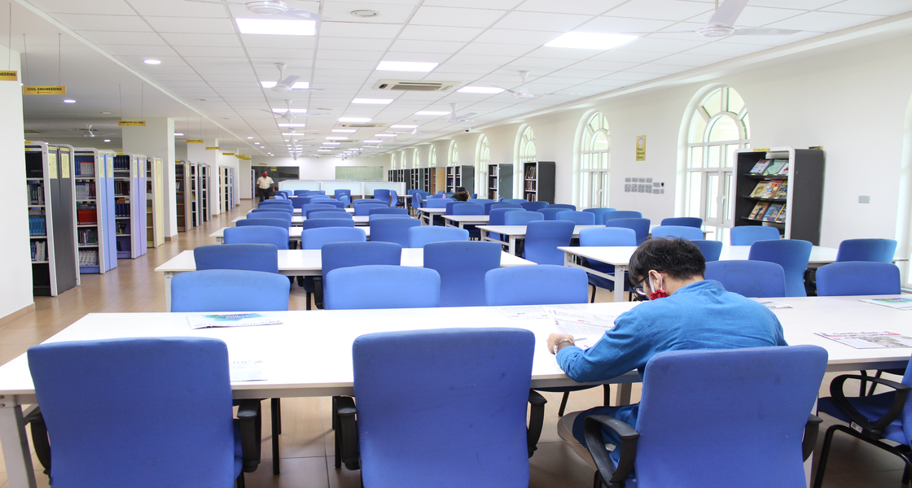
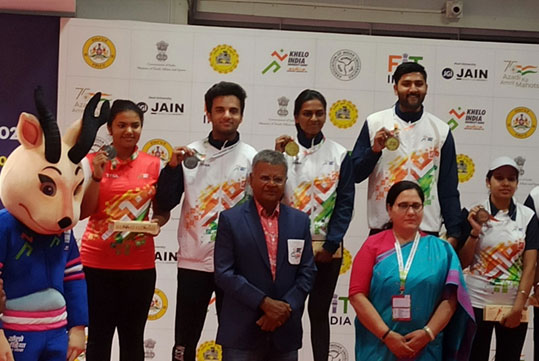

The ICTSES conference series started in 2018 at Manipal University Jaipur. The second edition, ICTSES-2021, was online with NIT Jaipur and NIT Uttarakhand. ICTSES-2023, held on December 14-15, 2023, collaborated with NIT Uttarakhand, MNIT Jaipur, and IIIT Ranchi.
Bio Science Lab
Manipal University Jaipur (MUJ) has a Bioscience Lab with world-class infrastructure

Library
MUJ's Central Library spans 2319 Sq.m., accommodating 700 individuals in an air-conditioned, serene atmosphere. Employing RFID technology, it offers seamless access, automatic document handling, and extensive resources, including 57,800 books, 400 print journals, 18 e-resources, and 2500 CDs/DVDs.
CAF Lab
The Central Analytical Facilities (CAF) offers cutting-edge instruments for material analysis, aiding scientific inquiry and innovation. Serving both internal users within the university community and external researchers and industries, CAF provides invaluable support for research across various disciplines.
Radio
A community radio station, operationalized on May 2, 2023, covers a radius of 12-15 km and reaches approximately 100,000 listeners across localities like Bagru Industrial Area and Mahindra World City. Featuring diverse programming, it aims to educate and connect rural communities, with a tagline "Judenge Gaaon Jodegi Siksha."

Sports
MUJ stands out for its top-notch sports infrastructure and individual coaching across various disciplines. From organizing events like International Yoga Day to paying tribute to sporting legends like Major Dhyan Chand with annual marathons, MUJ's sports policy prioritizes talent development and fosters a culture of fitness and excellence among students.
Student Idea challenge
09 Dec 2023 TO 22 Dec 2023
MUJ's Departments of Biotechnology & Chemical Engineering and Civil Engineering organized the 2023 Online Student Idea Challenge on "Energy and Environmental Conservation," where students proposed "Technologies for Green Hydrogen Production In India"
Harmony Within: Classical Dance
11 August 2023
The Department of Psychology, in collaboration with the Department of Data Science and Engineering, orchestrates an engaging and enlightening Interactive Session on "Harmony Within: Healing Rhythms of Indian Classical Dance," fostering profound insights and cultural appreciation.